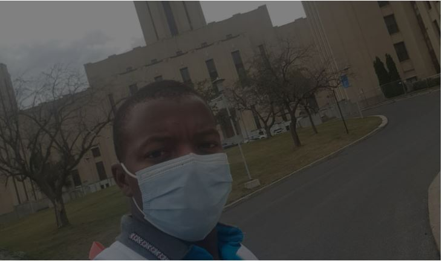
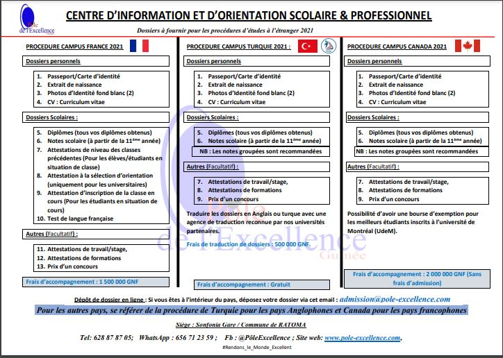

Etudier à l’Etranger
Ce service concernera tous les jeunes qui désirent aller faire des études supérieures à l’étranger. Ces jeunes devront avoir un niveau minimum de Terminale. Il va consister à les assister dans la procédure de recherche d’opportunités d’études et de soumission des dossiers de candidature pour les études supérieures à l’étranger.
Si vous avez l’opportunité ou l’envie de partir étudier à l’étranger, saisissez cette chance ! Les avantages sont nombreux, tant pour votre CV que pour votre culture personnelle.
C’est un projet motivant et des plus excitant. L’expérience est unique et vous permettra de très rapidement être à l’aise dans la langue de votre choix, d’acquérir de nouvelles compétences linguistiques et connaissances culturelles. C’est également l’occasion d’étudier au sein des plus prestigieuses universités internationales.
Pour autant, un séjour d’études à l’étranger ne s’improvise pas. Formalités administratives, choix du pays et du cursus, financement, vie sur place : de nombreux paramètres sont à anticiper, plusieurs mois avant le départ.

Voici 10 raisons pour aller étudier à l’étranger
-
Vous deviendrez plus indépendant.
Que vous voyagiez à l’extérieur du pays pour la première fois, ou même que vous viviez seul pour la première fois, étudier à l’étranger vous pousse à devenir indépendant et autonome. Il y a bien sûr des défis à relever, mais c’est incroyablement gratifiant. Les étudiants disent souvent qu’étudier à l’étranger a été une période de croissance personnelle énorme pour eux.
-
Vous découvrirez une autre culture.
Peu importe que vous voyagiez dans dix fuseaux horaires ou simplement dans le pays voisin. Étudier à l’étranger vous expose à de nouvelles personnes, à un nouveau mode de vie et à une nouvelle culture. Notre société est plus mondiale que jamais, et ces expériences vous exposeront à différents types de personnes qui feront de vous un meilleur employé, étudiant et personne en général.
-
Vous vous démarquerez des futurs employeurs.
Vous acquerrez des compétences précieuses en étudiant à l’étranger et les employeurs en prendront note. Vous serez un communicateur plus fort, aurez de meilleures compétences interpersonnelles et acquerrez une intelligence de la rue qui vous aidera à penser de manière critique, quelle que soit votre profession.
-
Vous élargirez votre éducation.
Supposons que vous soyez étudiant en archéologie – étudier dans un pays où vous pouvez réellement visiter des ruines antiques sera incroyablement précieux. Quel que soit le domaine dans lequel vous vous trouvez, étudier à l’étranger vous exposera simplement à de nouvelles voies pour poursuivre vos passions, ou même en explorer de nouvelles. Le monde compte tellement d’universités exceptionnelles – alors regardez au-delà de votre école actuelle et explorez les possibilités.
-
Vous acquerrez de précieuses compétences en voyage.
Bien voyager est en effet une compétence, et c’est une compétence que tous les citoyens du monde devraient avoir. Non seulement vous apprendrez les normes sociales d’un nouvel endroit, mais même en découvrant des choses comme les transports en commun, vous obtiendrez des compétences de vie précieuses.
-
Vous en apprendrez plus sur vous-même.
Lorsque vous vous retirez d’un environnement dans lequel vous vous sentez à l’aise, vous devez vous attendre à beaucoup de croissance personnelle. Il n’est pas toujours facile de quitter sa ville natale et de déménager dans un tout nouvel environnement, même si ce n’est que quelques mois ! Mais sortir de votre zone de confort peut être vraiment revigorant. Même dans les moments les plus stressants du mal du pays, des barrières linguistiques et de la gestion des devises étrangères, vous apprendrez à saisir l’occasion et à découvrir de quoi vous êtes vraiment fait.
-
Vous allez étendre votre réseau.
Si étudier à l’étranger pour la croissance personnelle et l’opportunité d’élargir votre éducation ne suffit pas, faites-le pour les amitiés. Cela peut être effrayant de se faire de nouveaux amis, mais c’est tellement gratifiant. Vous vous rendez peut-être compte que vous avez tant de choses en commun avec quelqu’un qui vit dans un autre pays. Que vous soyez ou non en train de créer des liens avec quelqu’un d’autre de votre pays qui est en voyage avec vous, ou de vous faire des amis avec un local, élargir votre réseau est excellent pour votre vie sociale, votre carrière et votre propre croissance. Et avec des amis à l’étranger, vous aurez toujours une excuse pour y retourner !
-
Vous vous immergerez dans une nouvelle langue.
Apprendre une nouvelle langue peut être une expérience passionnante, surtout si cela fait des années que vous n’en avez pas appris une à l’école. Même si vous n’apprenez que les bases, vous exercez toujours une partie de votre cerveau. Et aller dans un pays où ils parlent la même langue que vous est toujours une expérience fascinante – vous apprendrez de nouveaux modèles d’argot et de discours et verrez votre propre langue avec des yeux totalement différents.
-
Vous partirez pour de nouvelles aventures.
Vous n’avez même pas besoin de faire de la randonnée en montagne pour partir étudier à l’étranger – essayer un nouvel aliment peut être une aventure suffisante. Mais vous vous exposez toujours à de nouvelles choses auxquelles vous ne pourriez pas vous exposer à la maison. Et bien que vous puissiez (et devriez certainement !) prendre des photos pour Instagram et vos amis à la maison, vous serez probablement tellement absorbé par ces nouvelles expériences que vous poserez votre téléphone et en profiterez.
-
Vous emporterez avec vous toutes ces nouvelles compétences.
Rentrer chez soi après un semestre (ou des années) à l’étranger peut susciter toutes sortes d’émotions. Le choc culturel inversé est réel ! Mais ces émotions signifient que vous avez changé et que vous avez probablement ramené beaucoup de compétences avec vous. Vous pourriez même réaliser à quel point votre pays d’origine vous a manqué et en acquérir une nouvelle appréciation.
Le processus de candidature
Vous avez une liste d’écoles en tête ? Il est maintenant temps de commencer le processus de candidature. Nous vous promettons que ce n’est pas aussi compliqué qu’il n’y paraît ! Si vous avez déjà postulé dans une université à la maison, le processus sera probablement assez similaire. Lisez la suite pour savoir exactement ce qui se passe dans une demande d’études à l’étranger.
La liste des dossiers à fournir.
S’ORGANISER
Avant de faire quoi que ce soit d’autre, organisez-vous. Nous vous recommandons de commencer par une feuille de calcul pour vous aider à garder une trace des délais. Vous pouvez également conserver des listes de contrôle des exigences pour chaque école. Vous devriez revenir à cette feuille de calcul encore et encore tout au long du processus pour la mettre à jour. Si une feuille de calcul n’est pas votre style, vous devriez essayer de faire une liste de contrôle ou une sorte de document maître auquel vous pouvez revenir.
Appliquer
Prêt à postuler ? Bien que le processus de candidature varie en fonction du type et du niveau d’école auquel vous postulez, voici les exigences de base qui pourraient faire partie de votre candidature.
Notes
La plupart des programmes veulent voir comment vous avez réussi à votre dernière école, que ce soit votre université de premier cycle ou même votre lycée. Certaines écoles ont des exigences minimales spécifiques en matière de GPA qui devront être remplies pour être éligibles. Contactez votre école actuelle dès que possible pour qu’elle envoie votre relevé de notes à l’école à laquelle vous postulez.
Selon le système de notation du pays, vous devrez peut-être convertir vos notes ou même faire traduire votre relevé de notes dans une autre langue.
Les résultats des tests
Campus France demande, depuis 2021, les résultats des test de langue bien que c’est pas obligatoire et la plus part des pays et des programmes internationaux qui fonctionnent principalement en anglais demande de passer un test standardisé pour montrer que vous serez capable de suivre les cours. Pour la plupart des écoles, il s’agira soit de l’ IELTS (International English Language Testing System) soit du TOEFL (Test of English as a Foreign Language). Les écoles d’Amérique du Nord ont tendance à préférer le TOEFL, tandis que le Royaume-Uni a tendance à préférer l’IELTS – mais les deux tests ont tendance à être acceptés dans le monde entier, alors assurez-vous de vérifier les exigences individuelles de chaque école. Vous pouvez vérifier si vous êtes prêt à passer l’IELTS avec ce test.
Selon le pays, les écoles auxquelles vous postulez peuvent également exiger des tests standardisés plus généraux comme le SAT (que de nombreuses universités américaines exigent pour les étudiants de premier cycle). Si vous postulez dans une école doctorale américaine, vous devrez peut-être passer le GRE.
Lettre de motivation/Déclaration personnelle
Certaines écoles vous demanderont de rédiger une déclaration personnelle (parfois appelée essai d’études à l’étranger) expliquant pourquoi vous postulez à leur programme. C’est l’occasion de montrer votre personnalité, vos priorités en tant qu’étudiant et comment l’école vous aidera à réaliser vos rêves. Les lettres de motivation varient en longueur, mais attendez-vous à environ 500 mots en moyenne.
Votre lettre de motivation doit faire plusieurs choses :
- Expliquez pourquoi vous souhaitez étudier dans l’université à laquelle vous postulez. Pensez à ce qu’ils peuvent vous offrir et à la façon dont vous pouvez contribuer à leur institution.
- Expliquez pourquoi vous voulez étudier dans leur pays, et non dans votre pays d’origine.
- Montrez la preuve que vous pouvez exceller à l’étranger et dans leur université en particulier.
Votre lettre de motivation ne doit pas :
- Soyez une lettre générique que vous envoyez à toutes les écoles auxquelles vous postulez.
- Plantez le doute que vous ne pourriez pas supporter d’être un étudiant international loin de chez vous.
- Plantez le doute que vous ne pourriez pas supporter d’être un étudiant international loin de chez vous.
Recommandations/références des enseignants
Certaines écoles demanderont une ou deux références académiques à soumettre avec votre candidature. Souvent, ils demanderont aux enseignants de soumettre des références directement à l’université, bien que parfois on vous demandera de les envoyer vous-même.
Choisissez des enseignants qui vous connaissent vraiment et avec qui vous avez de bonnes relations. Il s’agit peut-être d’enseignants que vous avez eu récemment. Lorsque vous leur demandez une référence académique, vous pouvez fournir un CV et une liste des écoles auxquelles vous postulez, afin qu’ils puissent personnaliser leurs références. Une bonne règle de base : donnez-leur un préavis d’au moins un mois et soyez prêt à envoyer des rappels.
Intervue
Les entretiens ne sont pas très courants, mais on peut vous demander de faire un entretien par téléphone ou Skype. Les entretiens peuvent sembler effrayants, mais ils sont un excellent moyen de montrer votre personnalité et une bonne occasion pour vous de poser des questions et de décider si l’école est faite pour vous – les entretiens sont une voie à double sens !
Voici quelques questions que vous pourriez rencontrer lors d’un entretien d’études à l’étranger :
- Pourquoi voulez-vous étudier à l’étranger ?
- Pourquoi êtes-vous intéressé par ce programme en particulier ?
- Quels sont vos objectifs de carrière à long terme ?
- Avez-vous déjà été à l’étranger ? Comment avez-vous trouvé ?
- Quelles parties de la culture du PAYS attendez-vous le plus avec impatience ?
- Comment vous impliqueriez-vous dans notre école ?
- Que faites-vous pendant votre temps libre ?
Vous devriez également venir avec vos propres questions. Mais effectuez d’abord des recherches et ne posez pas de questions que vous pourriez facilement trouver sur leur site Web. Prendre le temps d’effectuer des recherches réfléchies montrera à votre interlocuteur que vous êtes sérieux au sujet de son programme et de vos études à l’étranger. Cela peut vous aider à faire un « entretien fictif » avec un ami ou un membre de la famille avant le vrai entretien.
Si vous vous préparez à un entretien d’études à l’étranger, vous serez sûr de laisser une bonne impression. Envoyez une note de remerciement de suivi par e-mail après l’entretien !
Trouver un logement
Certains programmes vous fourniront un logement ou prendront les dispositions nécessaires pour vous – et si c’est le cas, vous êtes très chanceux. Pour ceux qui sont chargés de sécuriser leur propre logement, voici les différents types de logement que vous rencontrerez lorsque vous serez étudiant à l’étranger :
Dortoirs étudiants: Les dortoirs étudiants sont formidables car ils sont meublés et vous offrent un accès instantané aux personnes de votre âge qui sont dans une situation similaire à la vôtre. Socialement, c’est un scénario idéal. En termes de confidentialité, vous renoncerez probablement à un peu d’intimité. Tous les dortoirs sont différents, mais vous partagerez probablement une cuisine et pourrez partager une salle de bain. Vérifiez auprès de votre université pour ce qu’ils offrent. Les dortoirs peuvent souvent être une bonne valeur – ils sont souvent à un prix raisonnable et sont proches du campus.
Familles d’accueil. Les familles d’accueil sont une excellente option pour les personnes qui souhaitent s’immerger dans la culture locale. Vous vivrez une véritable expérience en vivant avec quelqu’un d’autre (ou toute une famille) et pourrez bénéficier de leur sagesse et de leurs conseils en tant que locaux. Ces lieux sont aussi bien évidemment meublés ce qui est idéal pour ceux qui ne seront dans le pays que temporairement. Bien sûr, ici aussi, vous devrez renoncer à une certaine intimité. Mais cela pourrait en valoir la peine si vous souhaitez vous intégrer plus rapidement dans la culture. Vous ne savez pas par où commencer ? Homestay.com est un bon point de départ. Votre programme peut également être en mesure de vous mettre en contact avec des gens.
Appartements: Le plus privé de vos options, les appartements sont parfaits pour ceux qui sont à l’aise avec plus d’indépendance. Bien sûr, selon l’endroit où vous vivez, votre complexe d’appartements peut avoir beaucoup d’étudiants, ce qui peut le rendre aussi social qu’un dortoir pour étudiants. Recherchez des appartements entièrement meublés. Les appartements peuvent être chers, vous devrez donc peut-être trouver un colocataire (ou deux). La recherche d’un appartement peut également être difficile à naviguer lorsque vous ne pouvez pas visiter les appartements avant de prendre une décision. Il existe cependant plusieurs ressources que vous pouvez utiliser pour trouver des appartements pour étudiants.
POINTS À GARDER À L’ESPRIT LORSQUE VOUS CHERCHEZ UN LOGEMENT À L’ÉTRANGER :
Parce que vous ne pourrez probablement pas visiter l’appartement, sachez que certaines annonces que vous verrez seront des arnaques qui tenteront de vous faire dépenser beaucoup d’argent dans des endroits qui n’en valent pas la peine. Pour éviter cela, nous vous recommandons d’inverser la recherche d’images Google pour voir si les photos publiées sont légitimes ou s’il s’agit de photos d’archives utilisées dans plusieurs annonces.
Nous vous recommandons également de donner la priorité à votre sécurité, en particulier dans les grandes villes où la petite délinquance peut être courante. Ce n’est pas parce qu’un appartement est bon marché qu’il vaut la peine de sacrifier votre sentiment de bien-être.
Faire un budget
Gérer son argent est l’une des choses les plus difficiles à faire à l’étranger. Avec autant de nouvelles expériences à portée de main, il est facile de gaspiller de l’argent. Et c’est vrai, vous ne vivez qu’une fois, vous devez donc absolument profiter au maximum de votre expérience d’études à l’étranger. Mais vous pouvez le faire d’une manière raisonnable qui est dans votre budget !
Votre budget variera en fonction de l’endroit où vous étudiez à l’étranger – il n’y a certainement pas de budget unique car certains pays sont plus abordables que d’autres. Vous verrez souvent la fourchette de 30 000 000 GNF à 80 000 000 GNF comme moyenne pour ce que vous passerez sur plusieurs mois à étudier à l’étranger.
France : demande un montant minimum de 7380 euros (84 555 000 GNF) par ans sans parler des frais d’inscription dans une université publique
- Licence : 2770 euros (31 737 000 GNF)
- Master : 3770 euros (43 194 000 GNF)
Et les frais de scolarité dans les universités privées qui varient entre 3000 à 10 000 euros (34 372 000 à 114 572 000 GNF)
Canada : Demande minimum 22 000 CAD (168 269 000 GNF) par ans qui constitut les frais de subsistance et les frais de scolarité d’une session.
La Turquie : Demande un montant minimum de 6000 euros (68 744 000 GNF).
QUELQUES CONSEILS BUDGÉTAIRES DE BASE POUR VOUS AIDER À ÉCONOMISER DE L’ARGENT À L’ÉTRANGER :
- Apportez votre carte d’étudiant partout. De nombreux pays proposent des cartes de réduction pour les étudiants, et apporter souvent votre carte d’étudiant peut vous permettre d’accéder aux musées et autres attractions touristiques à un prix réduit. De nombreux magasins et restaurants proposeront également des réductions pour les étudiants.
- Trouvez des activités gratuites. Bien sûr, certaines choses coûtent de l’argent, mais vous seriez surpris du nombre de choses que vous pouvez faire gratuitement. Recherchez des activités de plein air (y compris des gymnases en plein air), des plages, des musées gratuits et des festivals.
- Vérifiez souvent votre budget. Faire un budget ambitieux avant de partir ne peut pas faire de mal, mais vous devriez réviser une fois que vous arrivez dans le pays et avoir une meilleure idée de ce que les choses vont coûter. Assurez-vous également de vérifier régulièrement votre compte bancaire. Surtout lorsque vous n’êtes pas habitué aux devises étrangères, vous pourriez par inadvertance dépenser plus que vous ne le pensez.
- des moyens de voyager bon marché. Si vous souhaitez voyager encore plus pendant votre période d’études à l’étranger, recherchez des moyens bon marché de le faire. Les compagnies aériennes bon marché comme Ryanair pourraient être un bon pari pour vous, et regardez aussi les trains et les ferries. Pour les déplacements interurbains, vous pourriez envisager d’investir dans un vélo. C’est un excellent exercice et peut être moins cher que de prendre le métro ou le train. Pensez aussi à marcher !